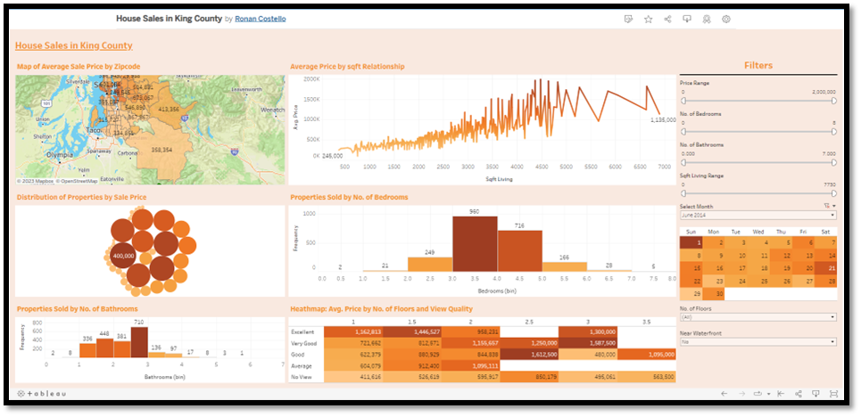

Introduction
The housing market is a continually ever-growing industry that is usually influenced by a range of factors whether it be globally or within your hometown. It is crucial that buyers and sellers of a home are provided with analysis to understand a range of factors such as market conditions, the significance of bedroom / bathroom sizes, their budget and more. This could also prove favourably for businesses that have a robust and up to date analysis like seen on the website ‘www.daft.ie’. A good data analysis that influences data driven decision making could potentially have a positive effect on a business such as driving traffic to its website and profitability. In this report I will the “House Sales in King County” data set that provides analysis on trends and patterns.
Data Source
I have collected the dataset “House Sales in King County” from a well-known data analysis website known as Kaggle. By definition Kaggle is “A subsidiary of Google, it is an online community of data scientists and machine learning engineers. Kaggle allows users to find datasets they want to use in building AI models, publish datasets, work with other data scientists and machine learning engineers, and enter competitions to solve data science challenges”. This dataset contains information on residential properties sold between May 2014 and May 2015 located in King County, Washington in the United States of America. It is stored as a comma separated value (CSV) file, labelled kc_house_data.csv and is considered wide data as each row is represented by one property described in numerous columns. Some of the columns listed include price, no. of bedroom, no. of bathroom, square foot, and Location. Link to dataset can be found here.
With some minor cleaning on this dataset, I can show visually the significance of key metrics that influence the sale of a house. I will be able to then group these visuals and display them on a dashboard using tableau public to create a more user-friendly experience that can be used for potential stakeholders.
Data Composition
Now that I have collected the dataset that I will be using for this project it is immensely important that I now understand the data’s composition. To carry this out I downloaded and opened the CSV file labelled kc_house_data.csv which will load the dataset. Each property is each individually listed into a row which comprises of 21613 rows and there are 21 columns to give the properties specific attributes. To give an overview the attributes some of these columns include:
- Dataset has only 1 file in CSV format organized in wide format.
Id – Identification number of the property.
Date – When the property was sold.
Price – The price the property was sold at.
Bedrooms – The number of bedrooms at the property.
Bathrooms – The number of bathrooms at the property.
Sqft_living – The square foot of the house.
Floors – How many floors the property has.
Waterfront – Does the property have a waterfront (listed as a binary value where 0 = No and 1 = Yes).
View – A rating of the overall view of the property (0 = Lowest, 4= Highest)
Condition - The condition of the property (1 = Lowest, 5 = Highest)
Yr_built – The year the property was built.
Yr_renovated – The year if the property was renovated
Zip code – The postal code of the property.
Lat and Long – Coordinates of the property.
Data Cleaning
In this part of the report, I will be using excel and by definition, ‘’Microsoft Excel is a computer software program that is used for organising and analysing data in tables and graphs. It can be used to create reports, track expenses, and more.’’
Data cleaning is an integral part of data processing and ensures that the data can be used for further analysis. I want to ensure that the data set I am working with is clean by exploring if there are any duplicates, missing values, removing irrelevant data, and ensuring the correct format for certain columns. Below are the actions I took to ensure the dataset cleaning:
- I checked for any duplicates by applying a conditional format to highlight the property IDs in red which returned 353 values out of the possible 21613 properties. As this was quite a large amount, I ran further analysis, and I was able to conclude that some of the properties we sold under the same Id but had different sale dates this let me to not remove them from the dataset.
- The waterfront column is considered a Boolean as the options consists of two values with 0 being not near the waterfront and 1 is near the waterfront. Using the find and replace function I change the 0 to No and 1 to Yes.
- To locate any missing values, I again used conditional formatting but this time I created a rule whereby any blank cells were highlighted red. After creating the rule, I scanned the dataset looking out for red cells to which there were none.
- The currency column were missing commas and the currency sign as the format this column was set to general. To fix this, I needed to change was the format from general to Currency.
- I want to remove any outliers from my dataset and to do that I want to set up a framework for the data that I want to work with. I want to ensure that my data is only working with a maximum number of 8 bedrooms, 8 bathrooms and a house price of 2 million dollars. I can use the filter function in this case and remove any outliers that exceed these numbers.
- Then I removed any irrelevant data from my dataset that I did not need to use every column that is provided. In terms of square feet will be only needing the sqft_living column for my visual and can remove all other columns with sqft. This leads me to deleting 5 columns as they are not needed. Additionally, I could use SQL to build a table only including the columns I would deem necessary for the visualizations.
- Finally, I notice that the date format is incorrect as the dates are listed as YYYYMMDD trailed by ‘T000000’. To clean this, I created 3 blank columns I extracted out the day, month and year using the Right, Left and Mid formulas. I then used a concatenate formula using a dash as a delimiter between the day, month and year then copying and pasting it in as values.
Data Analysis objectives
With the dataset that is provided there are numerous questions that we can ask and provide objectives that gain insights into the real estate industry as there is a lot of information within this data. What I want to showcase in this report is the customer behaviours into buying properties over this period and how stakeholder can use that information to better understand the real estate industry particularly in this location. To get a better understanding about how we can come to these results and insights I have proposed the following questions below:
Visual Development & Interpretation
To complete the objectives and questions addressed in the pervious section it is best to create visualizations to present to stakeholders your findings and insights. To create these visualizations, I have used Tableau which is a widely used software in the field of data analytics. By definition “At its core, Tableau is a data visualization tool, founded by three Stamford students as a result of a computer science project in 2003. Tableau was created with a guiding philosophy to make data understandable to ordinary people. It’s considered to be the most popular visualization platform in the industry, well regarded within the business intelligence community for its ease of use and simple functionalities, which make it easy to create insightful dashboards in a few clicks”. The colour theme I have gone with for the visuals is orange where light Orange represents the lower end of the scale to a darker Orange which represents a higher concentration. Below are 7 different visualizations I have created and grouped together to create a dashboard that I will explain in the next section:
- Geographical Map:
- Line Chart:
- Histogram Bathrooms:
- Histogram Bedrooms:
- Bubble Chart:
- Heatmap:
- Filters:
Finalized Dashboard
Below is my finalized version of the dashboard using the visualizations that I have created in tableau and to give a more complete look it is filtered by the month of June for the Calander filter, and I displayed on a bright orange background. I would like to give a walkthrough of the dashboard and how each visual reacts to the filters.
- The titles are placed above each visualization and describes exactly what each of them are measured on.
- The Geographical map and the line chart are only affected by the select month filter while the other 4 visuals will be impacted by all filters.
- Hovering over anything that is coloured in orange will give a more comprehensive analysis on the dashboard e.g., hovering over June 1st, 2014, will bring up the tool tip box displaying the day of the week, what day of the week it is, the week number of the year and the average price of the property.
- The price range, No. of Bedrooms, No. of Bathrooms and sqft Living Range are slider filters that can be used to give a very drilled down visual analysis if needed. The select month and near waterfront filters are a single value dropdown list meaning only one option can be selected at a time and the No. of floors filter is a multiple dropdown list where multiple fields can be selected.
Please feel free to check out my dashboard in action on tableau public here.

- The most expensive Zip code to live in was 98039 at an average price of $1,454,440.
- The cheapest Zip code to live in was 98158 at an average price of $240,328.
- Zip codes concentrating closer to the centre of Seattle tend to have a higher sale price.
- A 3-bedroom property was typically more sought after making up for 45% of purchases.
- A property with 2.5 bathrooms were also more sought after as they made up about 31% of the overall purchases.
- There is a positive relationship between the average price and sqft of a property meaning that the larger the property the likely the sale price would also be higher.
- From the heatmap we found that the better the view and the higher the number of floors came with a higher sale price. One limitation to this is that it the dataset does not differentiate between houses and apartments so this could affect the overall study.
- Most properties that were sold had a sale price between $250,000 to $400,000 this accounted for 39% of all sales.
- Concentrate sales in zip codes with lower average prices. From looking at the geographical map on tableau we can see the lower Zip code areas make up a higher area than the top expensive areas and could assume there are more properties
- The most sought-after properties tend to be a 3-bedroom / 2.5-bathroom property. If my stakeholders are a real estate company, I would recommend that these could be sold above the average price within the zip code.
- From the heatmap of the no of floors and view quality of properties seems I little imbalanced. For example, an excellent view with 2.5 floors is selling at an average of $200,000+ more than an excellent view with 2.5 floors. I would recommend recalibrating the average prices so there is more consistency in higher sales prices for a better view and more floors.
Insights
When presented with a dataset it can be difficult to be able to extract insight right away. That is why analysing and being able to visualise the story the dataset tells us is so important to provide insights and recommendations. From analysing this data set I was able to come up with some insights that may not have been noticed before with potential stakeholders. He is some of the key insight I found:
Recommendations
Now that I have presented valuable insights to my stakeholders it is now appropriate to provide recommendations to them. This is important as it will help drive data driven decision making and be able to help steer the company in a positive direction. Some of the recommendations I am going to propose are:
Conclusion
To conclude, the real estate industry is a continues to be a rapidly growing and changing industry and creates trillions of USD in revenue worldwide every year. The house sales in Kings County provided real and beneficial analysis to be able to effectively communicate the results of the dataset to stakeholders. From this dataset I was able to ask important questions about my dataset to identify what objectives I wanted to solve. I then prepared the dataset to ensure its integrity and avoid potential biases. Then I was able process the dataset by cleaning and transforming it. After cleaning the dataset, I then was able to analyse it where I could understand the key insights. After the analysis was complete, I was able to share what I found by creating visuals on tableau to showcase to my stakeholders and finally I was able to act by providing recommendations.
- © Featured Project